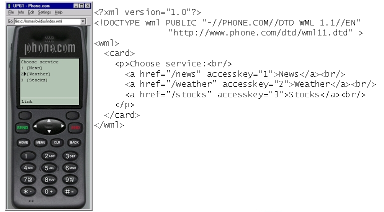
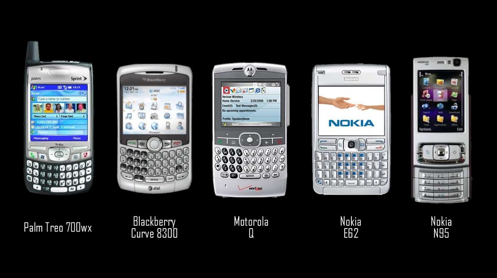
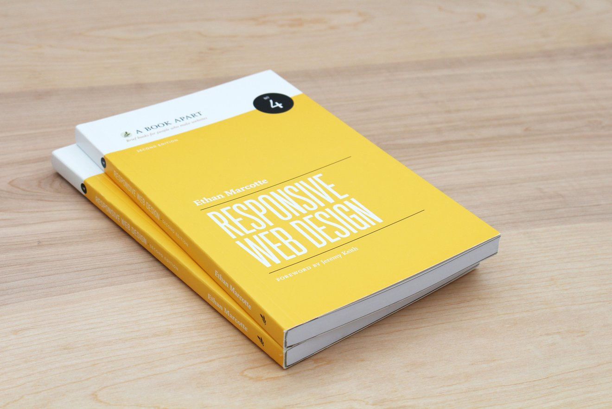
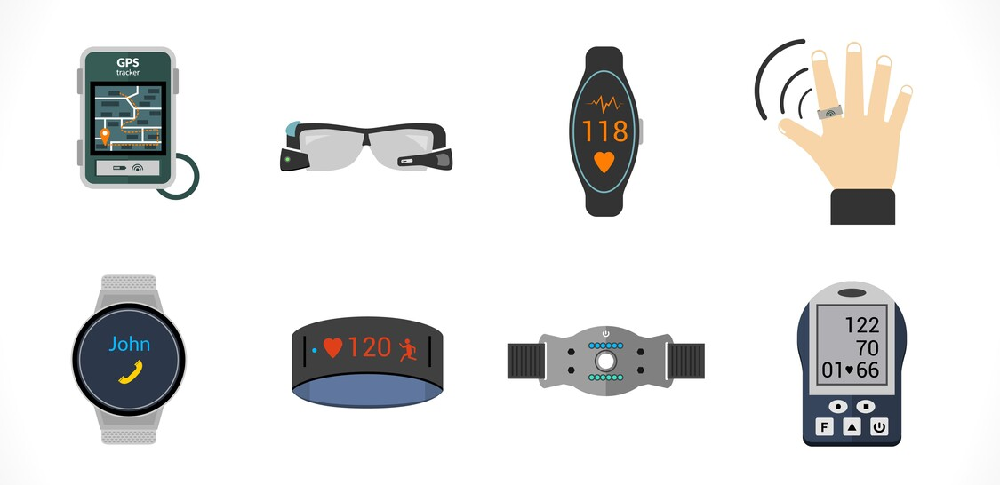

Un poco de historia
En 1998
WML - Wireless Markup Language
WPA - Wireless Application Protocol

Dispositivos Móviles de Primera Generación
En 2007
Nace el iPhone
En 2008
W3C Mobile Web Initiative
En 2010
Ethan Marcotte
En 2011
Responsive Web Design
3 principios del Responsive Design
- Grids Flexibles
- Imágenes Flexibles
- Media Queries
Responsive Design
No sólo es pensar en adaptar el contenido al tamaño de la pantalla.
...También es considerar:
- Conexión de Red ( Wifi, 2G, 3G, 4G, 5G, etc ).
- Hardware y Software de los dispositivos
( S.O., Versiones, Memoria, Procesador, Sensores, etc ). - Interacciones ( con teclado y ratón, táctiles, por voz ).
- Accesibilidad web ( soporte a discapacidades ).
¿Por qué?
Te recuerdo que en 2007, nace el iPhone
Y entonces pasamos de esto...
... a esto...
...y esto...
...y ¿quién sabe que más?...

Estrategias de Diseño Multidispositivos
- Responsive Design - ( Ethan Marcotte, 2010 )
- Adaptive Design - ( Aaron Gustafson, 2011 )
- Responsive + Server Side ( RESS ) - ( Luke Wroblewski, 2011 )
- Responsible Responsive Design - ( Scott Jehl, 2014 )
- Fluid Design - ( Trys Mudford, 2020 )
- Más información ( Diseño Web en la Era Móvil )
Muchas gracias